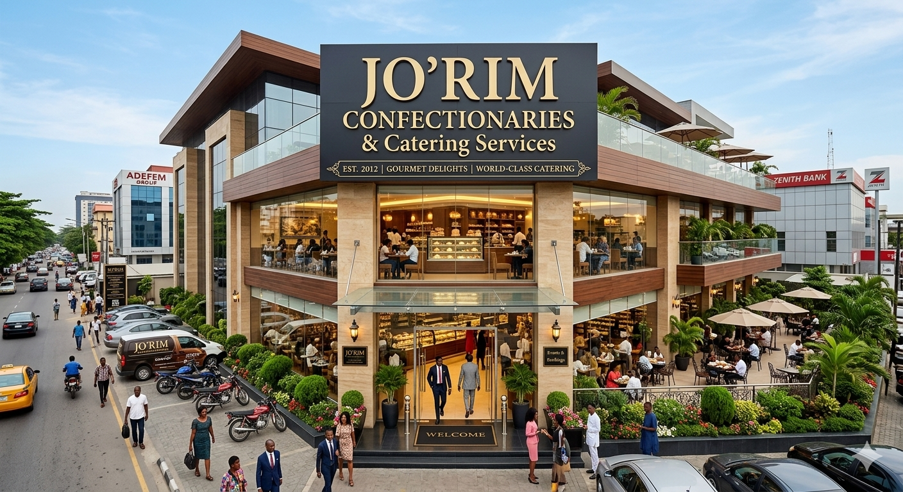

At JO'RIM, we believe that food is more than just sustenance, it's a celebration of flavor, family, and tradition. Whether you are looking for the perfect centerpiece cake for a special occasion or a full-course catered spread for your next big event, we bring passion and precision to every dish we create.

What we do.
We specialize in a fusion of exquisite confectionery and professional catering services, ensuring that your guests leave with a smile.
- Custom Confectioneries: From signature cakes and pastries to gourmet desserts, our sweets are handcrafted using the finest ingredients.
- Full-Service Catering: We provide diverse menus tailored to weddings, corporate events, birthdays, and private parties.
- Authentic Flavors: Our kitchen prides itself on consistent quality and that homemade touch that sets us apart from the rest.
Why choose JORIM?
- Quality Ingredients:We never compromise on the freshness or quality of our supplies.
- Tailored Experience: Every event is unique. We work closely with you to design a menu that fits your vision and budget.
- Commitment to Excellence:With years of experience in the culinary arts, our team is dedicated to providing seamless service and unforgettable tastes.
"Our mission is simple: To provide delicious, high-quality food that brings people together."